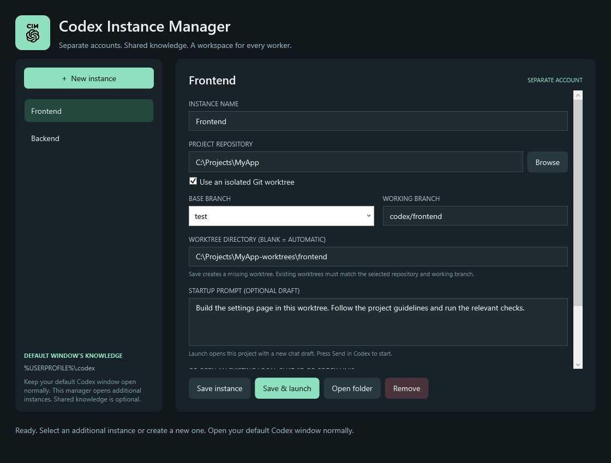

Named account profiles
Keep your default Codex window open normally. This manager lists and launches additional instances with their own logins, sessions, settings, and databases.
FOR WINDOWS 11 · OPEN SOURCE
Name your instances, give each a worktree, and launch the right account into the right project.
v0.1.2 · Experimental release · Free under MIT

One saved setup for each account. Desktop shortcuts reopen that setup.
KEEP THE CONTEXT. SEPARATE THE WORK.
Keep your default Codex window open normally. This manager lists and launches additional instances with their own logins, sessions, settings, and databases.
Choose a repository, a base branch, and a distinct working branch. Create a new worktree or reuse one that matches.
A desktop shortcut opens the saved project with a new chat draft, or an existing local chat from that profile.
GET STARTED
You need the Codex desktop app. Git for Windows is required for worktrees.
Download and extract the ZIP. Open the Codex-Instance-Manager folder and run Install.cmd. Installation is per-user.
Open the manager desktop shortcut. Choose New instance, give it a name, and select a project. Set its base branch and worktree if needed.
Choose Save & launch. Sign into the intended account on first use. Your prompt opens as a draft; press Send when ready.
A FEW THINGS TO KNOW
No. It is an independent community project by artizandevs, not affiliated with or endorsed by OpenAI. It launches the desktop app you already have installed.
This release uses an undocumented desktop profile override found in Codex package 26.1002.7124.0. An app update could change it. Worktree and profile-configuration checks are automated; simultaneous sign-ins and browser callbacks still need wider live testing. Complete first-time sign-ins one at a time and check each window's account.
They can start from the same base, such as test, with different working branches. Git normally prevents the same branch being checked out in several worktrees. You review and merge completed work yourself.
Your default window stays outside the manager. Updates preserve worker profiles and retire the old Main launcher entry without changing its Codex data. Removing an instance removes its manager entry and keeps its folders and worktree. The launcher does not copy account credentials between profiles.
It tells a worker to consult the main instance's guidance and memory files. Relevant content may enter that worker's model context. This is an instruction rule, not a Windows access-control boundary. It does not combine chats or automatically merge new worker memories.
It opens drafts and leaves Send to you. This launcher includes no telemetry or cloud-sync service. Codex is a separate application with its own settings and behavior.
Free to use, inspect, and improve.